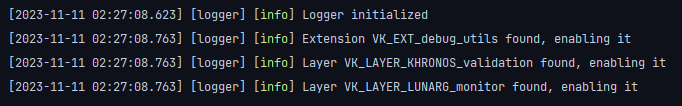
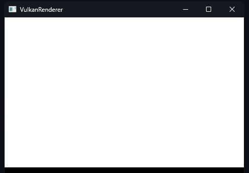
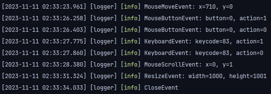

This is the first update report. I've written a couple of classes that make up the base of this project. From here on out I'll start writing more vulkan code. Next up is device and surface creation.
In the following sections I'll talk about some of the things that I've implemented.
Application
This class contains the main loop of the program, which at the moment doesn't include much.
void Application::run()
{
while (!window->isClosed())
{
onUpdate();
window->onUpdate();
}
}
It currently calls two update functions. The window onUpdate function just calls glfwPollEvents and the application onUpdate isn't implemented yet.
It also features an onEvent function which receives events from the GLFWwindow. This function is getting passed as a callback function to the window class.
void Application::onEvent(Event &event)
{
switch (event.type)
{
case Event::Type::Keyboard: {
auto data = std::get<Event::Keyboard>(event.data);
LOG_DEBUG("KeyboardEvent: keycode={}, action={}", data.keycode, data.action);
break;
}
case Event::Type::MouseMove: {
auto data = std::get<Event::MouseMove>(event.data);
LOG_DEBUG("MouseMoveEvent: x={}, y={}", data.xPos, data.yPos);
break;
}
case Event::Type::MouseButton: {
auto data = std::get<Event::MouseButton>(event.data);
LOG_DEBUG("MouseButtonEvent: button={}, action={}", data.button, data.action);
break;
}
case Event::Type::MouseScroll: {
auto data = std::get<Event::MouseScroll>(event.data);
LOG_DEBUG("MouseScrollEvent: x={}, y={}", data.xScroll, data.yScroll);
break;
}
case Event::Type::Resize: {
auto data = std::get<Event::Resize>(event.data);
LOG_DEBUG("ResizeEvent: width={}, height={}", data.newWidth, data.newHeight);
break;
}
case Event::Type::Close: {
LOG_DEBUG("CloseEvent");
break;
}
}
}
This simple system will probably work fine for everything we need. In the future we might need to forward the events to the gui, but that can just be a method call from a gui class.
Window
The window class receives a properties struct in its constructor.
struct Properties
{
std::string title;
Mode mode{Mode::Windowed};
bool resizeable{false};
bool resized{false};
Vsync vsync{Vsync::ON};
Extent extent{800, 600};
std::function<void(Event &)> eventCallback;
};
These settings are then used to initialize glfw. Because we're only going to use vulkan (and not directX for example), there is no need to abstract the window class for different operating systems. Also, we are using glfw which is cross-platform already.
This is also where the eventCallback gets called. This is one example.
glfwSetWindowSizeCallback(handle, [](GLFWwindow *window, int width, int height) {
if (auto *data = reinterpret_cast<Properties *>(glfwGetWindowUserPointer(window)))
{
data->extent.width = width;
data->extent.height = height;
data->resized = true;
Event event{Event::Type::Resize, Event::Resize{width, height}};
data->eventCallback(event);
}
});
It uses glfwGetWindowUserPointer to get the windowData and then uses the callback which gets set in the application.
Events
Events are currently just a struct with a type and data.
struct Event
{
struct Resize
{
int newWidth;
int newHeight;
};
enum class Type
{
Keyboard,
MouseMove,
MouseButton,
MouseScroll,
Resize,
Close
};
using Data = std::variant<Keyboard, MouseMove, MouseButton, MouseScroll, Resize, Close>;
Type type;
Data data;
};
The type can then be checked in switch statement and the data can be accessed.
Input Polling
Sometimes it can be helpful to poll input. Glfw provides functions to do just that. To make those functions more easily accessible the glfw functions are in the vkf namespace. As the need for more functionality arises, more functions will be added.
{
bool isKeyPressed(GLFWwindow *window, int keycode);
bool isMouseButtonPressed(GLFWwindow *window, int button);
std::pair<double, double> getMousePosition(GLFWwindow *window);
double getMouseX(GLFWwindow *window);
double getMouseY(GLFWwindow *window);
}
The top-level namespace for the Vulkan Framework (vkf).
Definition Event.h:17
Logging
This project uses spdlog. The init function gets called in the main entry point of the program. The macros can then be called to log relevant information.
#ifndef ROOT_PATH_SIZE
#define ROOT_PATH_SIZE 0
#endif
#define __FILENAME__ (static_cast<const char *>(__FILE__) + ROOT_PATH_SIZE)
#define LOG_INFO(...) spdlog::info(__VA_ARGS__);
#define LOG_WARN(...) spdlog::warn(__VA_ARGS__);
#define LOG_ERROR(...) spdlog::error("[{}:{}] {}", __FILENAME__, __LINE__, fmt::format(__VA_ARGS__));
#define LOG_DEBUG(...) spdlog::debug(__VA_ARGS__);
The logger gets initialized when the static init function from the Application class gets called.
void Application::initLogger()
{
try
{
std::vector<spdlog::sink_ptr> sinks;
sinks.push_back(std::make_shared<spdlog::sinks::stdout_color_sink_st>());
auto logger = std::make_shared<spdlog::logger>("logger", sinks.begin(), sinks.end());
#if !defined(NDEBUG)
logger->set_level(spdlog::level::debug);
#else
logger->set_level(spdlog::level::info);
#endif
spdlog::set_pattern("[%^%l%$] %v");
spdlog::set_default_logger(logger);
logger->info("Initialized logger");
}
catch (const spdlog::spdlog_ex &ex)
{
std::cerr << "Log initialization failed: " << ex.what() << std::endl;
exit(EXIT_FAILURE);
}
}
Vulkan Hpp
This project uses vulkan.hpp. This means the code will look a bit different from the standard Vulkan API. Because this project is compiled using the c++20 standard, I also use designated initializers. In order to use them you need to #define VULKAN_HPP_NO_CONSTRUCTORS. This makes the code look cleaner in my opinion. Here an example from the vulkan hpp gitHub.
vk::ApplicationInfo applicationInfo{
.pApplicationName = AppName,
.applicationVersion = 1,
.pEngineName = EngineName,
.engineVersion = 1,
.apiVersion = VK_API_VERSION_1_1
};
vk::InstanceCreateInfo instanceCreateInfo{ .pApplicationInfo = & applicationInfo };
Dynamic Loader
I'm using the Dynamic loader that vulkan-hpp provides. In order to use it, a couple of macros have to be defined.
#define VULKAN_HPP_DISPATCH_LOADER_DYNAMIC 1
#define VULKAN_HPP_NO_CONSTRUCTORS
VULKAN_HPP_DEFAULT_DISPATCH_LOADER_DYNAMIC_STORAGE
To create it there are three steps:
vk::DynamicLoader dl;
auto vkGetInstanceProcAddr = dl.getProcAddress<PFN_vkGetInstanceProcAddr>("vkGetInstanceProcAddr");
VULKAN_HPP_DEFAULT_DISPATCHER.init(vkGetInstanceProcAddr);
vk::Instance instance = vk::createInstance({}, nullptr);
VULKAN_HPP_DEFAULT_DISPATCHER.init(instance);
std::vector<vk::PhysicalDevice> physicalDevices = instance.enumeratePhysicalDevices();
assert(!physicalDevices.empty());
vk::Device device = physicalDevices[0].createDevice({}, nullptr);
VULKAN_HPP_DEFAULT_DISPATCHER.init(device);
There is a detailed explanation in the vulkan.hpp gitHub README.md.
Raii
With raii you don't have to worry about cleaning up your vulkan handles. Here an example from the gitHub.
vk::raii::Device device( physicalDevice, deviceCreateInfo );
This device gets destroyed automatically when it leaves its scope. There are other benefits, but also some inconveniences. All of this can be found in the raii programing guide.
Vulkan Instance
Instance is the first core class that I've implemented. It tries to enable all the extensions that were passed as required extensions in the constructor and sets up the debug messenger.
TODO: write about enabling layers and extensions
Debug Messenger
The debug messenger only gets initialized if in the debug build.
#if !defined(NDEBUG)
VKAPI_ATTR VkBool32 VKAPI_CALL debugCallback(VkDebugUtilsMessageSeverityFlagBitsEXT messageSeverity,
VkDebugUtilsMessageTypeFlagsEXT messageTypes,
VkDebugUtilsMessengerCallbackDataEXT const *callbackData,
void * )
{
if (messageSeverity & VK_DEBUG_UTILS_MESSAGE_SEVERITY_WARNING_BIT_EXT)
{
LOG_WARN("{} - {}: {}", callbackData->messageIdNumber, callbackData->pMessageIdName, callbackData->pMessage);
}
else if (messageSeverity & VK_DEBUG_UTILS_MESSAGE_SEVERITY_ERROR_BIT_EXT)
{
LOG_ERROR("{} - {}: {}", callbackData->messageIdNumber, callbackData->pMessageIdName, callbackData->pMessage);
}
return VK_FALSE;
}
#endif
#if !defined(NDEBUG)
debugMessenger = vk::raii::DebugUtilsMessengerEXT{
handle, vk::DebugUtilsMessengerCreateInfoEXT{
.messageSeverity = vk::DebugUtilsMessageSeverityFlagBitsEXT::eWarning |
vk::DebugUtilsMessageSeverityFlagBitsEXT::eError,
.messageType = vk::DebugUtilsMessageTypeFlagBitsEXT::eGeneral |
vk::DebugUtilsMessageTypeFlagBitsEXT::ePerformance |
vk::DebugUtilsMessageTypeFlagBitsEXT::eValidation,
.pfnUserCallback = &debugCallback,
}};
LOG_DEBUG("Created debug messenger");
#endif
#if !defined(NDEBUG)
vk::StructureChain<vk::InstanceCreateInfo, vk::DebugUtilsMessengerCreateInfoEXT> instanceCreateInfo = {
vk::InstanceCreateInfo{.pApplicationInfo = &applicationInfo,
.enabledLayerCount = static_cast<uint32_t>(enabledLayers.size()),
.ppEnabledLayerNames = enabledLayers.data(),
.enabledExtensionCount = static_cast<uint32_t>(enabledExtensions.size()),
.ppEnabledExtensionNames = enabledExtensions.data()},
vk::DebugUtilsMessengerCreateInfoEXT{
.messageSeverity = vk::DebugUtilsMessageSeverityFlagBitsEXT::eWarning |
vk::DebugUtilsMessageSeverityFlagBitsEXT::eError,
.messageType = vk::DebugUtilsMessageTypeFlagBitsEXT::eGeneral |
vk::DebugUtilsMessageTypeFlagBitsEXT::ePerformance |
vk::DebugUtilsMessageTypeFlagBitsEXT::eValidation,
.pfnUserCallback = &debugCallback,
}};
#else
vk::StructureChain<vk::InstanceCreateInfo> instanceCreateInfo = {
vk::InstanceCreateInfo{.pApplicationInfo = &applicationInfo,
.enabledLayerCount = static_cast<uint32_t>(enabledLayers.size()),
.ppEnabledLayerNames = enabledLayers.data(),
.enabledExtensionCount = static_cast<uint32_t>(enabledExtensions.size()),
.ppEnabledExtensionNames = enabledExtensions.data()}};
#endif
In order to track issues that can arise during instance creation or destruction, we pass the debugUtilsCreateInfo to the pNext extensions field of instanceCreateInfo. extension documentation
For this we're using vulkan-hpp structure chains. During instance creation we can get the creatInfo by simply calling
handle = vk::raii::Instance{context, instanceCreateInfo.get<vk::InstanceCreateInfo>()};
Results
When starting the program, this is the terminal output:
TODO: No surface yet

The logger gets initialized and the layers/extensions get enabled.

The Window doesn't display anything yet but works like any other window.

Events get outputted in the terminal in the Debug build at the moment, but will be used to interact with the application.